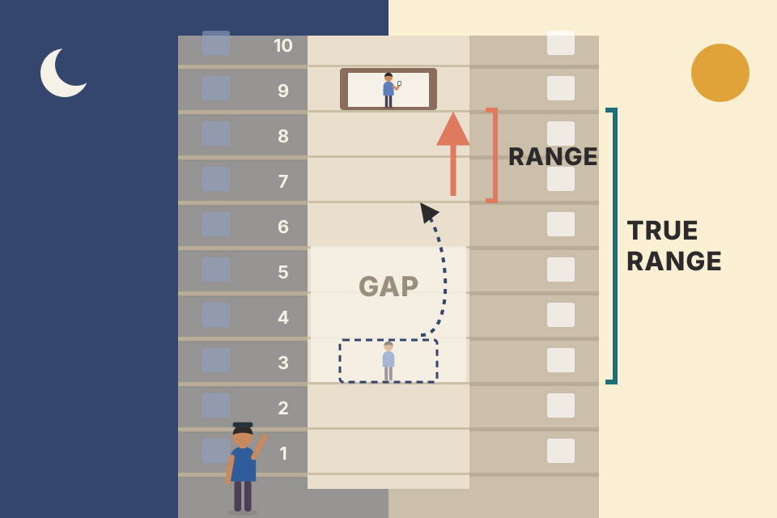
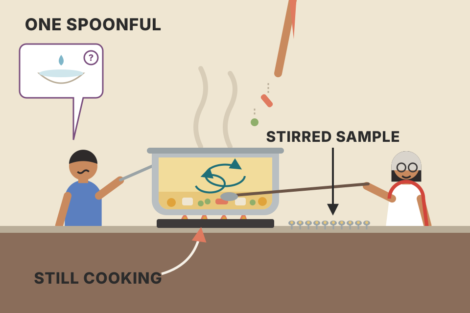
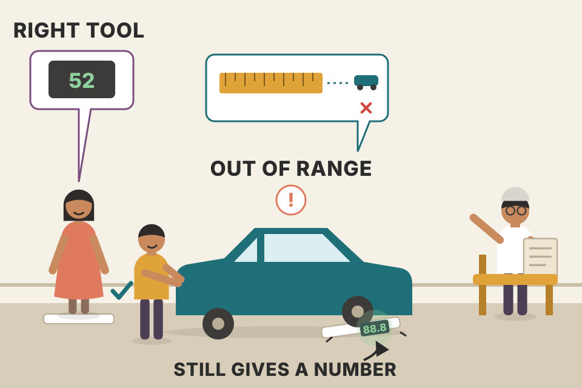
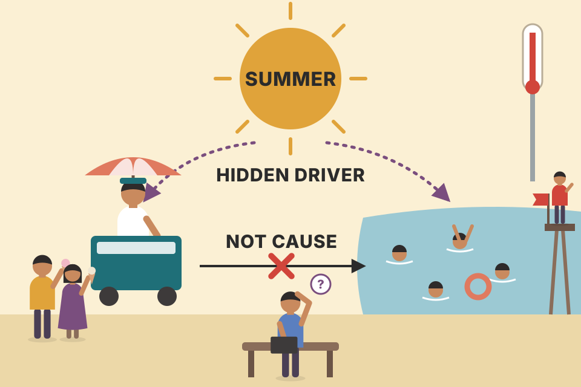

This chapter is Grimes' statistics toolkit for traders. First, put every price move on a common scale (returns, ATR, historical volatility, his standard-deviation spike). Then describe a pile of returns (distributions, mean and median, standard deviation and IQR). Then reason from a sample to the unseen population, and see why fat tails break that reasoning. Then three working tools: bin analysis with significance testing, linear regression, and Monte Carlo simulation. It ends with seven common ways analysts fool themselves. Every chart here runs on simulated data that you can re-roll. The simulations show the method; they are not evidence about real markets. The book's real-market numbers are quoted as the book's.
The chapter climbs a ladder. Each rung needs the one below it: you can't compare moves until they're standardized, you can't test an idea until you can summarize groups of numbers, and you can't trust any test until you know how it can mislead you.
The chapter opens with an epigraph from Plato: take counting, measuring and weighing out of any craft and very little of the craft is left. Then a story. Years earlier Grimes was struggling to adapt to a new market and a new timeframe. A friend, Doug, a former floor trader at the Chicago Board of Trade (CBOT), told him the way he was trading didn't fit how markets move. Grimes asked the obvious follow-up: then how do they move? Doug thought about it and admitted he didn't know, only that it wasn't like that. Grimes kept coming back to that question for the next decade; it shaped his whole approach.
Many old-school traders distrust quantitative work and feel that numbers can't replace hard-won intuition. Grimes grants there is some truth in that, but a main theme of the book is the reverse: a rigorous statistical framework can grow real intuition. Quantitative tools let you see relationships you would otherwise miss. The warning comes with it: in the wrong hands these tools can do more harm than good. They can give misleading answers and can even create relationships where none exist. He promises to point out pitfalls as he goes, and asks you not to accept anything at face value.
A doctor with years of bedside experience and a blood test. Experience tells her where to look; the blood test tells her whether what she "sees" is really there. Neither replaces the other. Grimes wants the trader's eye trained by measurement, not replaced by it.
Markets give you one noisy outcome at a time. Your memory keeps the vivid ones and drops the dull ones, so "intuition" built only from experience is a biased sample. Counting removes that bias: every case gets the same vote. That is all quantitative analysis really is at its core, and it is why the chapter keeps returning to the same question: is this difference bigger than what randomness alone would produce?
Notes/trading/backtest_results_summary.md already follows this loop: an idea, a test on NSE data with real FYERS costs, then a check on data the rules weren't tuned on.Some market math. Grimes admits a math chapter is hard to get excited about, but these are the tools of the trade: competing needs a deep sense of probabilities and market structure. Some traders build that sense through the school of hard knocks; quantifying the probabilities is a much more direct route. He deliberately skips the encyclopedic approach (his example: reading one paragraph on harmonic averages that you'll never see again) because a technique applied wrongly misleads. Instead he goes fairly deep on a few simple tools, and points to the bibliography for more. Even readers who know this material may see it in a new light.
The need to standardize. Pop quiz: which price change is bigger, 675 or 0.01603? It's a trick question: the only honest reply is to ask what "bigger" means. Assets trade at prices from fractions of a penny to millions of dollars, so raw changes can't be compared. The first fix is percentages. In research the first step is usually to turn prices into a return series:
Grimes treats the two as roughly interchangeable because the returns he studies are small, and for small moves they're almost equal: a 1% simple return is a 0.995% log return. They drift apart as moves get bigger. Academics like log returns because they are easier to work with mathematically; Grimes uses simple percentages in the book for clarity. One more property: percentages don't add. Lose $10 then gain $10 and you're flat; lose 10% then gain 10% and you're still down. Log returns do add, which is one reason researchers prefer them.
The book says a 10% simple return equals a 40.5% continuously compounded return. That number is wrong. ln(1.10) = 0.0953, so a 10% simple return is a 9.53% log return (and a 10% log return is a 10.52% simple return). The book's main point still holds: the gap grows with the size of the move. Check it in the calculator below.
Two people each say "I moved 675". One walked 675 metres; the other drove 675 km. You can't compare until you know the starting point. Percentages divide by the starting point. Log returns are like measuring on a ruler where every doubling is the same length, which is why their pieces add up end to end.
A simple return multiplies: (1 − 0.10) × (1 + 0.10) = 0.99, a 1% loss, because the +10% is taken on a smaller base. Logs turn multiplication into addition: ln(0.9) + ln(1.1) = −0.105 + 0.095 = −0.010, and e−0.010 − 1 = −1%. So summing log returns over a period gives the period's log return exactly; summing simple returns doesn't. For daily moves of ±1–2% the difference is tiny, which is why Grimes can use simple percentages.
Nifty moves 675 points from 25,000: 675/25,000 = 2.7%. A currency moves 0.01603 from 1.1000: 0.01603/1.1 = 1.46%. Now they're comparable: the index moved more, in percentage terms. Whether either move was large is the next section's question.
Notes/trading/trading_equations.md §2 (Sharpe) and §11 (annualised volatility) both start from a return series like this one.Percentages fix price level but not personality: some assets simply move more than others. Grimes' example is two currency rates, one that moves 0.5% on an average day and one that moves 2.0%. Both move 1.5% today. For the first that's a very big day, three times its average. For the second it's a small day, a bit under average. The simple way to measure this is average percentage return, but you must average the absolute values of the returns, or the ups and downs cancel out. He notes this isn't a common volatility measure because better tools exist; it's here because it shows the basic idea behind them.
A 1.5-metre wave. At a calm lake it makes the news. At a surf beach nobody looks up. To know if a move is "big", divide it by what's normal for that place.
The simulated returns above are drawn around zero. Their plain average is close to zero for both assets, so it says nothing about how much they move. The average of absolute values (the bar heights) is the typical size of a day's move. Divide today's move by it and you get a unit-free number: "how many normal days was today?" Every later tool in this chapter (ATR%, historical volatility, the σ-spike) is a better way to compute that denominator.
The most common volatility gauge among traders is the average range, or the Average True Range (ATR), of a bar or candle.
To standardize, express a day's change as a fraction of ATR. A stock that changes 1.0% on a day when its ATR is 2.0% made a 0.5 ATR% move. You could average the absolute values of these to get an average ATR% measure. But Grimes flags a logical problem: you'd be comparing a close-to-close change with a yardstick built mostly from the high and low. In a sense that is apples to oranges.

A lift that skipped floors 4 to 6 overnight: it closed at floor 3 and opened at floor 7. Today it only travelled 7 to 9. Its range is two floors, but a passenger who stayed on overnight rode six. True range counts the ride, not just today's part of it.
True range = max(high, previous close) − min(low, previous close). That single line covers all three cases (no gap, gap up, gap down). In the chart, the shaded column is the selected bar, the dashed line is the previous close, and the readout shows when the gap added to the range. The ATR line averages the last N true ranges with a simple average (Grimes doesn't specify the averaging; Wilder's original ATR uses a smoothed average).
Previous close ₹100. Today: high ₹106, low ₹103, close ₹104. Range = 106 − 103 = ₹3. The previous close is below the low, so true range = 106 − 100 = ₹6. If the 20-day ATR is 2.0% of price and today closed +4%, that's a 2.0 ATR% move, but remember Grimes' caveat: that is a close-to-close change measured with a range-based ruler.
Notes/trading/trading_equations.md §10 defines TR the same way and uses a Wilder-smoothed ATR (14) for stops; the backtest summary found fixed 1% risk with ATR stops "as good as or better than volatility targeting".backtest_results_summary.md uses a 2.5 ATR stop, an ATR length shorter than the 20–90 Grimes suggests for standardizing moves; for stops the purpose is different.Historical volatility (Hvol; also called statistical or realized volatility) is a good alternative for most assets, with the bonus that options traders use it too. For daily data:
Here p is price, t is this period, t − 1 the previous one, and the standard deviation is taken over a chosen window. A 20-period standard deviation gives a 20-bar Hvol. The annualization factor is the square root of the number of measured periods in a year; there are 252 trading days in a year, so daily data uses √252. Conceptually, Hvol is an annualized one-standard-deviation move at the current volatility. At 25% Hvol you could expect prices within ±25% of today's price one year from now if returns followed a zero-mean normal distribution, and Grimes immediately adds that they don't.
Your daily commute varies by about 4 minutes. Over a year of commutes the total doesn't vary by 4 × 252 minutes, because good and bad days partly cancel. Random wobbles grow with the square root of the number of steps. That is why the annualizing multiplier is √252 ≈ 15.9, not 252.
If daily returns are independent with standard deviation σ, the variance of a sum of 252 of them is 252σ², so the yearly standard deviation is σ√252. The simulated market above switches between calm and stormy regimes; watch the Hvol line react. A short window reacts fast but jumps around; a long one is smooth but late. Switch to weekly or monthly bars: the same simulated prices give a similar annual number, because the factor changes to √52 or √12 (it isn't identical, because the sample is smaller and the regimes shift).
Daily SD of log returns = 1.575%. Hvol = 1.575% × √252 = 1.575 × 15.87 ≈ 25%. On a ₹1,000 stock that is a one-SD band of roughly ₹750–₹1,250 a year out under the normal assumption Grimes warns against (beyond the book: a typical single day is 1,000 × 1.575% ≈ ₹16).
Notes/trading/trading_equations.md §11 has the same square-root-of-time rule (σannual = σdaily√252), and §14 the expected move from implied volatility.The standardized measure Grimes uses most in his daily work: each day's return expressed in standard deviations of the past 20 days' returns. He calls it a standard deviation spike and uses it on charts and in quantitative screens. The book announces four steps but prints only three:
Read it this way (my interpretation, since "BaseVariation" isn't defined on the page): BaseVariation is the 20-day standard deviation from step 2, as of yesterday, so today's move is not part of the ruler it is measured with.
A smoke alarm that calibrates itself to the last 20 days of your kitchen. After a quiet month even toast sets it off. After a month of stir-fries it takes a real fire. It measures surprise relative to recent habit, not danger in absolute terms.
Two things make big spikes common. First, only 20 observations estimate the denominator, so it is often too small by luck; even perfectly normal data then produce more 3+ readings than the textbook 0.27% (the pooled table shows this). Second, real returns have fat tails and volatility that comes in clusters: a quiet stretch shrinks the ruler, then a shock arrives. The "fat tails + clusters" model (a GARCH-style process with Student-t shocks, my choice of model) produces 3+ readings about six times a year and 5+ readings about once a year in the pooled count, far above the textbook rates and in the spirit of the few 5–6 SD days a year Grimes reports for real stocks. Those pooled counts are from simulation, not from his data.
The last 20 daily returns of a stock have SD 1.2% (as of yesterday's close). Today it falls 4.2%. Spike = −4.2 / 1.2 = −3.5: a surprise move by Grimes' 2.5–3.0 yardstick. The same −4.2% on a stock whose 20-day SD is 3.5% is a −1.2 spike: an ordinary day.
Markets speak the language of probability. We live through single outcomes, but they only mean something across large samples. Statistics gives tools to summarize data and expose hidden relationships.
Any information can be turned into numbers; the hard part is presenting it. There's always a trade-off: a summary loses detail that may matter, but lets you grasp the whole set. Grimes' image: the ages of everyone in a large city, printed out and loaded on a tractor-trailer. All you could say is that it's a lot of numbers. Descriptive statistics strips the set down to its important elements.
The histogram is one very useful tool: sort the raw data into evenly spaced categories (bins) and count each. More bins give finer resolution; how many to use depends on what you want to show. Figure 11.1 compares daily % changes of LULU (a volatile momentum stock) with SPY (the S&P 500) from June 1, 2009 to December 31, 2010. Traders care most about the tails, the edges of the distribution, because that's where both exceptional opportunity and risk live. LULU's histogram is much wider, with many more large up and down days than SPY: a much crazier stock to trade.
Sorting coins into jars by size. You can no longer say which coin came first, but one look at the jars tells you what's common and what's rare. Too few jars hide the shape; too many and each jar holds one coin.
The two simulated series (about 400 trading days, the length of Grimes' window) share the same x-axis on purpose. The volatile one has a larger spread and fat tails: its outer bins are populated, the index's are empty. Counting days beyond ±5% (readout) is a crude but honest tail measure. Change the bins: the shape stays, the noise in each bar changes.
The normal distribution (bell curve) is widely used for three reasons:
Figure 11.2 shows three normal curves, all with mean zero and different standard deviations (0.5, 1 and 2). The standard deviation just describes spread; in the LULU/SPY example, LULU had the bigger SD, so its histogram spread further along the x-axis. Two last points. Don't read too much into the shape: many other distributions look like a bell, so a bell shape doesn't mean normal. And most important: normal distributions describe financial data exceptionally poorly. Assume normality in trading and you will badly underestimate risk. Over the past two decades that assumption contributed to several financial crises, when models and risk frameworks built on it failed.
Two curves can look alike in the middle and differ wildly at the edges. It's the edges that wreck accounts. A fat-tailed curve is a bell with a few hidden trapdoors far out on the sides.
With the overlay on, both curves have SD 1, yet beyond ±4 SD the normal puts about 0.006% of days (one day in roughly 60 years of 252 days) while the Student-t with 3 degrees of freedom puts about 0.6%, roughly 1.5 days a year. That factor of about 100 is the "dramatic underestimate" Grimes means. The second chart demonstrates the CLT he quotes: means of samples from a very skewed distribution (exponential, my choice) look more and more like a bell as the sample grows. Section 12 shows the CLT failing when the variance isn't finite.
A graph gives ideas; it isn't analysis. A few calculations summarize a data set. Central tendency describes where the data clusters; the three curves in Fig 11.2 share it, which is why they're centred on the same point. The mean is the sum divided by the count. People call it "the average", but that's imprecise because there are several kinds of average.
Five people aged 18, 22, 25, 33 and 38: mean 27.2. It describes them well: about as many people on either side, nobody is exactly 27.2, but it's a good guess for anyone's age. The median is the middle value after sorting; with an even count it's the mean of the two middle values (matters mostly in small sets). Here the median is 25, also a reasonable guess.
Why two measures? They treat outliers (extreme values in the tails) differently. Bring a 3,000-year-old mummy into the room (absurd examples help build intuition). The mean jumps to 522.7; the median, now between 25 and 33, only rises four years to 29. The mean now describes nobody. The median is a better guess, but it's completely blind to the mummy: the jump in the mean is what tells you a huge value arrived. Make the mummy 3,000,000 years old: the median stays 29, the mean becomes a little over 500,000, a number meaningless for the five people and a vast understatement for the (extraterrestrial?) mummy. Market data often contain a handful of extreme events, so Grimes looks at both mean and median throughout the book.
Bill Gates walks into a café. The mean wealth of the customers is now a billion dollars; the median customer is still a student with a coffee. The mean tells you somebody unusual arrived. The median tells you what a typical customer looks like.
The mean uses every value's size, so one huge value moves it by (huge value − old mean)/n. The median uses only order: adding one value shifts it by at most half a position, whatever that value's size. That's why the axis here is logarithmic: on a normal axis the five people would sit in one pixel.
Dispersion is how far the data spread from the centre. Standard deviation: find the mean, square each point's distance from it, and average the squares to get the variance (not useful for most market work because its units are price squared); the square root of the variance is the SD. Without squaring, positive and negative distances would cancel. Squaring makes them all positive and also greatly magnifies outliers, which may or may not be what you want. And since SD is built on the mean, if the mean isn't meaningful (or is undefined) the SD isn't either.
Market and trading data often have large outliers, so another measure helps: the interquartile range (IQR). Rank the data and find the 25th and 75th percentiles (first and third quartiles); their difference is the range holding the middle half of the values, so it's also called the "middle 50". SD is extremely sensitive to outliers; the IQR is almost blind to them. Used together they reveal more about complex distributions from trading problems.
Table 11.1 summarizes the three age examples (no mummy / 3,000 / 3,000,000). Means: 27.2, 522.7, 500,022.7. Medians: 25.0, 29.0, 29.0. Standard deviations: 7.3, 1,107.9, 1,118,023.9. IQRs: 3.0, 6.3, 6.3. Mean and SD react violently to the outlier; median and IQR barely move.
The book's SDs match the population formula (divide by N, not N − 1): 7.30, 1,107.9 and 1,118,023.9 reproduce exactly. The sample formula would give 8.17, 1,213.7 and 1,224,733.8. The book's IQRs (3.0 and 6.3) don't match any standard quartile method I tried: the usual linear-interpolation quartiles give 22 and 33 for the five ages (IQR 11), and 22.75 and 36.75 with the mummy (IQR 14). The lesson survives either way: the IQR hardly reacts to the mummy while the SD explodes. The calculator uses linear interpolation.
SD is a smoke detector that screams at one burnt match. IQR is a thermostat in the middle of the room that doesn't notice the match at all. Each misses something the other catches.
The mummy's squared distance from the mean dwarfs everyone else's, so the SD is essentially (mummy's distance)/√N: it grows in lock-step with the mummy (look at the parallel lines on the log chart). The quartiles depend only on which values sit at the 25% and 75% positions; adding one value at the far end just slides those positions a little.
Inferential statistics draws conclusions about a population (every member of a set) from a sample, or, for markets, about data produced by some random process. Example: the average weight of all apples in an orchard. You could weigh every apple, but usually you can't or won't, so you pick a sample and make educated guesses. It isn't simple: if the orchard has several varieties with different-sized apples, where and how you pick matters. How many apples do you need? What does the population's distribution look like? What's its average? How sure can you be?
Grimes' set-up: average apple 4.5 ounces, normal distribution, SD 3 ounces (facts you wouldn't know in reality, or you wouldn't measure). Pick two apples and average them, then a third, and so on, recording the running average. His random draws were unlucky: the first apple weighed only 1.07 oz. (The "apples" are really numbers from a random generator, so some are negative, which real apples can't be; that was needed for the Cauchy part later.)
With markets the hard question comes first: what is the population and what is the sample? With a long history (the Dow Jones Industrial Average from 1896; some commodities with patchy prices back to the 1400s) it's tempting to call the full history the population. Grimes thinks that's a mistake. The population is better thought of as all possible returns for that market: everything that has happened, will happen, and could happen. All market history, including all future history, is only a sample of it. The question for traders and risk managers is what that unobservable population looks like.

Tasting soup. One spoonful from the top might be all broth; stir and take ten spoonfuls and you know the soup. The orchard with several varieties is a soup you didn't stir. Markets are a soup that is still being cooked while you taste it.
The running mean's typical error shrinks like σ/√n: with σ = 3, about 0.67 oz after 20 apples, 0.30 after 100, 0.06 after 2,500 (readout shows yours). A bad first apple pulls the early average down by (4.5 − 1.07)/n, which fades as n grows, so the line looks like it's "trending up" when it's really recovering. Re-pick a few times: sometimes 100 apples land close to 4.5, sometimes not. That spread is the uncertainty.
backtest_results_summary.md judges rules on later data than they were chosen on for exactly this reason: one stretch of history is not the population.The real world isn't always polite enough to be normal. Some families of distributions have no mean at all. Think back to the mummy: now imagine many ages that could be arbitrarily huge or tiny. The mean would keep lurching with each extreme value and be useless.
The Cauchy family has such extreme outliers that its mean is undefined and its variance infinite. If price changes really come from a population like this, then in the words of a risk-manager colleague of Grimes, we're all screwed in the long run.
If the apples were Cauchy:
Averaging lottery outcomes where, very rarely, a ticket wins an amount bigger than every prize so far combined. However long you play, the next jackpot can drag the average anywhere. The middle ticket, though, is always "lost a little".
The simulation draws Cauchy numbers centred on 4.5 as 4.5 + s·tan(π(u − ½)), with scale s = 3 (my choice; the book doesn't give one). For a Cauchy distribution the mean of n draws has the same Cauchy distribution as a single draw: averaging buys nothing, so the CLT's "finite variance" condition from section 08 fails. The median uses order, not size, so it converges at the usual √n rate. Each re-draw gives a different-looking mean path; that's the point, not a bug. (Beyond the book: strictly the Cauchy variance is undefined rather than infinite, but it's the same practical message.)
After the abstract part, good news: some of the best market tools are the simplest. Complex techniques tempt you, but it's easy to get lost in their details and lose sight of what matters, and they bring their own complications. Data mining is Grimes' example: it is perfectly capable of finding patterns in random data that don't exist. Nearly all your market analysis can probably be done with basic arithmetic plus central tendency and dispersion. Three simple tools belong in every trader's kit:
A carpenter's tape measure, spirit level and square do most of the job. The laser scanner is great until it confidently measures a reflection.
The more knobs a method has, the more ways it can bend to fit noise. A comparison of two group averages has almost no knobs, so it can't flatter you much; a data-mining search over thousands of patterns has nearly unlimited knobs and will always find something. Section 25 shows that effect directly.
By far the simplest and most useful of the three tools. Define a condition clearly; split the data into days that have it (the signal group) and days that don't (the control group); compute simple statistics for each and compare. The simplest test: does the signal group have a higher mean and median return? Other attributes can be compared too.
Example: some traders believe certain weekdays are reliably stronger or weaker. Grimes splits the 2010 returns of the Dow Jones Industrial Average by weekday and reports the share of days closing up and the mean return. 2010: all days 56.75% up, mean +0.04%. Monday 59.57% up, +0.22%; Wednesday 61.54%, +0.18%; Tuesday 53.85%, −0.05%; Thursday 54.90%, 0.00%; Friday 54.00%, −0.14%. Each weekday only means something compared with the all-days baseline. If you sampled random days from that year, about 56.75% would close up and the mean would be near zero; an unlucky small sample could differ, but large or many samples would very probably converge on those numbers. Monday and Wednesday beat the baseline on both measures; Friday looks prone to sell-offs.
So: buy Friday, sell Monday, buy Tuesday's close, sell Wednesday's? No. The math describes only the data examined, here one year. Before acting, check whether the effect is stable over time and think about whether there's a reason it should persist. 2009 (Table 11.3): all days 53.97% up, +0.07%. Monday 56.25%, +0.02%; Tuesday 48.08%, −0.03%; Wednesday 53.85%, +0.16%; Thursday 58.82%, +0.19%; Friday 53.06%, 0.00%. Monday still closes up more often but now has a below-average mean. Wednesday's mean is still over twice the average, but it closes down more often than the average day. Friday, the "soft" day of 2010, is exactly average. You could go further with more measures and formal tests, but often just splitting the data and comparing summary statistics answers the question, or flags an idea worth deeper work.
Testing a new fertilizer: treat half the plants (signal), leave half alone (control), compare. Bin analysis is that, with days instead of plants. If you only had one season and five small plots, a plot could look great by luck; you'd want a second season before buying a truckload.
The simulation has no weekday effect at all: every day is drawn from the same distribution (mean +0.04%, SD 1.1%, about the size of the Dow's daily moves in those years; my assumption). Yet each simulated year shows "strong" and "weak" days, and they reshuffle the next year, much like 2010 versus 2009. With about 50 Mondays a year and a 1.1% SD, a weekday mean wobbles by roughly 1.1/√50 ≈ 0.16% by chance alone, about the size of the effects in the tables. The pooled readout counts this over 2,000 simulated pairs of years.
The percentages imply the counts: 59.57% of Mondays = 28 of 47; 61.54% of Wednesdays = 32 of 52; all days 56.75% = 143 of 252. So Monday's "edge" over the baseline is about 1.3 extra up-days in a year. Section 27 explains why counts are often more honest than percentages.
backtest_results_summary.md used the same signal-vs-control logic: it beat an equal-weight hold of the same stocks and all 20 random portfolios.Significance testing is complex and even divides statisticians, but the core idea is simple: random variation must be considered when judging any result, because interesting results sometimes appear by chance. Grimes' image: big bags of numbers you can only sample one at a time. Did two samples come from the same bag? One full of 2s, 3s and 4s versus one with numbers from 20 to 40: clearly different bags. But a sample averaging 3 versus one with a few extra 4s averaging 3.2? Maybe you just pulled extra 4s from the same bag. A key factor is sample size: the bigger the samples, the more confident you can be that small differences are real.
A courtroom. The defendant (your edge) is presumed not to exist. The data must prove it beyond reasonable doubt. "Not guilty" doesn't mean innocent; it means the evidence wasn't enough. The p-value is how often an innocent world would produce evidence this damning by coincidence.
The chart draws 4,000 pairs of samples from the same bag (normal, your SD) and plots the difference in their means: the spread is what luck alone produces. The share of luck-differences at least as large as yours is the simulated p. The readout also gives the formula version: standard error = SD/√n, z = difference/SE, two-sided p from the normal curve. For Mondays (0.18%, SD about 1%, 47 Mondays): SE ≈ 0.146%, z ≈ 1.2, p ≈ 0.22. Grimes' shortcut, difference/SD = 0.18 (under one-fifth of an SD), ignores n; dividing by SE instead adds the sample size he says matters. Both say: not significant. The 2% / 0.5% and 2% / 5% presets reproduce his one-sample example with n = 1 (pure SD units).
backtest_results_summary.md: p* = (L + c)/(W + L), and "every losing run had a win rate below its p*". The NSE futures momentum result there ("tiny real edge, eaten by ~₹480 charges + slippage") is a statistically real but economically empty edge.Linear regression helps measure the magnitude, direction and strength of relationships between markets. Grimes stresses this isn't a statistics textbook. Every mathematical tool has limits, pitfalls and blind spots, and most assume things about their inputs. Violate the assumptions and you may get misleading or false results; sometimes, though, an assumption can be broken with little effect. If you'll do analytical work for your own trading, learn the finer points; he recommends Miles and Shevlin (2000) as an introduction that is both accessible and thorough, which he calls a rare combination.
A see-saw with springs. The slope is how far your side moves when the other side moves; the p-value is whether there's a see-saw at all or just two people bouncing randomly; R² is how stiff the springs are, how much of your motion comes from the other side rather than your own bouncing.
Notes/trading/trading_equations.md §5 (CAPM beta) is this same regression with the stock on y and the market on x.The straight line: y = mx + b. y (vertical axis) is a function of x (horizontal). m is the slope: bigger m, steeper line; m = 0 gives a flat line (every x times 0 is 0); negative m slopes down. b shifts the whole line up or down: it's where the line crosses the y-axis, at x = 0. Grimes sets b = 0 and ignores it; Fig 11.9 shows lines with m = 2, 1 and −0.1. The one intuition to lock in: higher m is steeper; positive slopes up, negative slopes down.
Real relationships don't fall on perfect lines: noise and measurement error blur them, sometimes completely. So add one term:
Epsilon (ε) is the usual symbol for error in time series. Each point gets its own random ε, so the points jitter above and below the true line; σ sets how far (bigger σ, more spread; Fig 11.2 is the reminder). Every time you draw it, it's different. That one term turns a deterministic equation into a random (stochastic) process, a big leap because you're now dealing with uncertainty. Fig 11.10: same slope m = 1, error SD 0.5 (points hug the line) vs 4.0 (points scatter widely). More variability hides the same underlying line, which is common in market data.
A straight road seen through a rainy windscreen. The road (the line) hasn't changed; the rain (σ) decides whether you can see it. Turn σ to 0.5 and you see the road; turn it to 4 and you're guessing.
The solid dots are the line plus fresh normal noise at each x. The dashed line is the least-squares line fitted back from those dots (next section). With σ small the fit lands on the true slope; with σ large it can be noticeably off on any single draw. Press "new ε draws" a few times at σ = 4 and watch the fitted slope wander. That wander is why regression output needs a p-value.
The question: Barrick Gold (NYSE: ABX) explores for, mines and sells gold. Does the gold price influence the stock, and by how much? And what about the U.S. Dollar Index and the stock market (S&P 500 as proxy)? Grimes takes weekly prices from January 2, 2009 to December 31, 2010 and turns each into a return series.
Start with summary statistics (Table 11.4, 104 weekly returns each). ABX: mean 0.4%, SD 5.8%, worst week −20.0%, best +16.0%. S&P 500: 0.3%, 3.0%, −7.3%, +10.2%. Gold: 0.4%, 2.3%, −5.4%, +6.2%. USD: 0.0%, 1.3%, −4.2%, +3.1%. ABX, the S&P and gold have nearly the same mean, but ABX is far more volatile (it once lost 20% in a week). A series whose SD is this large relative to its mean is very noisy, and that noise can limit any analysis.
Then look at scatterplots (Fig 11.11, a matrix of every pair). Which ones hide a straight line? Gold/ABX looks like a very clean line; ABX/S&P hints at an upward slope; the USD boxes suggest slight downward slopes; S&P/gold is a shapeless cloud. So expect the strongest links to be ABX–gold and ABX–S&P, and check ABX–USD too.
How regression works: draw a line through the cloud, measure each point's vertical distance to it (the ε's of the last section, run in reverse), square them (same logic as the SD), and add them up. Try another line, repeat; keep the line with the smallest sum of squared errors: the least-squares fit (Fig 11.12, ABX on y vs gold on x). Grimes notes the trial-and-error picture isn't literally how it's done: this type of regression has a closed-form solution. Nobody does it by hand; a computer does in a fraction of a second what could take weeks by hand.
Read three numbers. (1) The slope m: direction and strength of the influence; positive means the dependent variable (y) rises as the independent variable (x) rises. (2) Its p-value: approach every analysis expecting no relationship, which would be a flat line; the p-value says how likely a slope this steep would be if there were truly no relationship. (3) R²: how much of the variation in y the x explains, i.e. how well the line fits. In finance R² well below 0.20 is common, and even a small R² can reveal something important. A simple regression assumes x is the only influence on y besides noise, which is unrealistic; markets respond to countless factors, some unknowable. R² says how much you've explained.
Results (Table 11.5). Gold: slope 1.79, R² 0.53. S&P 500: slope 0.75, R² 0.15. USD: slope −1.53, R² 0.11. All three p-values print as 0.00: they aren't truly zero, just very small and truncated, so all three slopes are statistically significant. The intuition was right. Gold explains 53% of ABX's weekly variation, exceptionally high for so simple a financial model, and the positive slope means higher gold goes with a higher ABX. The S&P link is positive but much weaker (lower R² and slope). The dollar is weaker still, and its slope is negative: a higher dollar index goes with lower ABX.
Last caution: regression shows how data series move together, when and how much. It can't explain or quantify a cause, if there is one; that's a much harder question. But if you can run a regression, you never have to take anyone's word about market relationships: you can ask the data yourself.
Threading a stiff wire through a swarm of beads so the total squared "pull" of all the beads on the wire is as small as possible. Tilt the wire away from the best spot (the slider) and the pull, the sum of squared residual sticks, always goes up.
The closed form: slope = cov(x, y)/var(x), intercept = mean(y) − slope·mean(x). R² equals the squared correlation for a one-variable regression, and slope = correlation × SD(y)/SD(x). The p-value here uses t = slope/SE(slope) with a normal approximation (fine for n = 104; labelled approximate). Simulated "gold" weeks have SD 2.3% like Grimes' gold; "miner" = slope × gold + stock-specific noise. With the defaults (slope 1.8, noise 4%) R² lands near Grimes' 0.53. Tick the −20% week and watch one point move the slope and R²: section 21's warning.
slope = √R² × SD(ABX)/SD(x). Gold: √0.53 × 5.8/2.3 = 0.728 × 2.52 ≈ 1.84 (book: 1.79). S&P: √0.15 × 5.8/3.0 ≈ 0.75 (book: 0.75). USD: −√0.11 × 5.8/1.3 ≈ −1.48 (book: −1.53). The small gaps come from rounding in the printed SDs and R²s. So a 1% weekly gold move went with roughly a 1.8% ABX move.
Notes/trading/trading_equations.md §5 (CAPM beta/alpha): beta is the slope of exactly this regression against the index.Many finance problems are surprisingly complex: many scenarios, choices at many steps, tens of thousands of branches, small early decisions with outsized later effects, and a market that is extremely random. Deterministic equations can't capture every possibility. With today's computing power the simplest answer is often to build a simulation that captures the important factors, run it, and see what happens.
Monte Carlo simulation, named by Los Alamos physicists in the 1940s after the casino, follows a basic pattern:
Example: the trader on a random-walk binomial tree. Each node is a coin flip, ±1 (formally i.i.d. on {−1, +1}). Simplest case: loss at −1, profit at +1, one step. Run hundreds of thousands of one-step trials and the P&Ls sum to very nearly zero: the simulation reproduces what probability says should happen.
Stop-loss rules on the tree quickly become intractable by hand (too many branches), but Monte Carlo handles any rule set. Maybe skip the profit target and trail a stop under the best P&L, leaving unlimited upside for a lucky run; random data has more runs than people expect, so one good run might pay for many small, controlled losses. Or maybe wider stops help you avoid getting hit by noise (Grimes points out that the tree is random, so it is all noise). These ideas sometimes make sense in real markets, but nothing helps in a random walk. His rule set:
Result: average P&L 0.02. An edge? Careful: an average of exactly zero would itself be unlikely; you must consider the variation. The SD of ending P&Ls was 15.2. As a rough rule of thumb you'd start to suspect significance at a mean two or more SDs from zero; 0.02 against 15.2 is deep in the noise. No evidence that the trailing stop creates an edge. Monte Carlo is a good alternative to deterministic methods when a problem has many moving parts or is very path-dependent: an advanced tool, worth understanding in every market and timeframe.
Testing a roulette "system" by playing it a hundred thousand times on a simulator before risking a rupee. If the average result is a hair from zero and the swings are huge, the system is a ritual, not an edge.
Each run walks ±1 until the P&L touches the stop (stop = max(initial stop, high-water mark − trail)) or the step limit ends the run. The book doesn't say how long a run lasts, so the limit is your choice. With 250 steps the SD comes out close to his 15.2, but that is a guess at his set-up, not a reproduction of it; the mean hugs zero whatever you pick. Why: a fair coin is a martingale, so no rule for when to stop can change the expected P&L. The trailing stop only reshapes the distribution: many small losses near the stop, a long right tail of lucky runs. The readout reports mean, SD, the standard error of the mean (SD/√runs) and mean ÷ SE; that last number is the honest test, since with 100,000 runs the SE is about 0.05.
backtest_results_summary.md): a small Monte Carlo control group.Applying quantitative tools to market data is not simple; some mistakes are obvious and some aren't. Grimes' first point is so simple it's often skipped: think carefully before doing anything. Define the problem and make the questions precise. Many errors come from launching into number-crunching without thinking the process through, and having more advanced tools can make you more prone to this. Second: understand the tools you use. Statistics software offers a smorgasbord of techniques; trying six you don't understand is asking for trouble. The seven mistakes that follow are common in market analysis: guard against them in your own work and look for them in others'.
A well-equipped kitchen doesn't make a cook. Someone who throws every spice in because the rack is full makes worse food than someone with salt, pepper and a plan.
No tool is perfect. Most do their job well most of the time but give biased or misleading results in special situations, and since market data are full of extreme values and randomness, those situations aren't rare. If you use these tools, learn everything you can about them.
Most tools assume things about the input. Linear regression assumes a real relationship exists, that it's a straight line, and that the errors are i.i.d. N(0, σ). The relationship might be better described by a curve, or a single outlier might swing the slope. Then results are biased at best and seriously misleading at worst.
Any result truly applies only to the sample examined. A pattern in 50 stocks over five years may or may not hold in other stocks or other years. Many technical analysts assume the same patterns work in every asset class (equities, futures, forex, fixed income); maybe, maybe not. So instead of claiming an experiment proves something, say that in the sample you examined you found evidence of it. The wording shapes your thinking.
Some trading questions are epistemological: what do we really know, how do we know it, how do we learn? Traders hunting the next big win usually ignore these. Grimes asks you to think about them and about the limits of market knowledge: we never know as much as we think, we're never as good as we think, and the market will remind us when we forget. Approach the work with humility; much more remains undiscovered than we know.

A bathroom scale is accurate for people. Weigh a car on it and it still shows a number, confidently. The tool doesn't know it's out of its depth; you have to.
Least squares always returns a line and an R², whatever you feed it. With a U-shaped relationship it reports a near-flat slope and a low R² although y depends strongly on x. With pure noise plus one far-out point it can report a steep, "significant" slope that comes entirely from that one point, because squaring gives the far point a huge say. Plot the data and the residuals before trusting the numbers.
backtest_results_summary.md is the "sample examined" lesson in action: profitable on Nifty 50, then all 43 settings lost on Nifty 200 stocks.Most statistical tools give better answers with bigger samples. Very specific conditions may leave only one or two qualifying events. (That's the problem with studies comparing the current market to particular past years: sample size = 1.) And many markets are tightly correlated: if stocks are up, most stocks are up that day; if the dollar is strong, most major currencies against it are weak. Most tools assume independent events. If you study opening gaps and 60% of your stocks gapped down on the same day, how independent are those events? Not independent. Across hundreds of stocks, expect many events to be highly correlated, so the real sample may be hundreds of times smaller than it looks.
Polling 200 people about the weather, all standing in the same street. You have 200 answers but really one observation: it's raining there. Correlated stocks on one day are 200 people on one street.
Each simulated stock's daily return = √ρ × (market factor) + √(1 − ρ) × (own noise), so any two stocks have correlation ρ. With ρ = 0, the share of stocks falling on a day stays near 50% (±3.5%); "60% fell together" almost never happens. With ρ around 0.3–0.4 it's routine. A standard rule of thumb for N equally correlated events: effective sample size ≈ N / (1 + (N − 1)ρ). For 200 stocks with ρ = 0.35 that's about 2.8 independent observations per day, not 200, roughly 70 times smaller: Grimes' "hundreds of times smaller" for bigger universes and stronger correlation.
backtest_results_summary.md) has fewer independent observations than the trade count suggests.Worth repeating: noticing that two things differ is never enough; notice how much each varies. A 2% difference between two means might be significant if each has an SD of half a percent, and is probably meaningless if each has an SD of 5%. If two sets differ but both have a large random component, the difference may well be chance. Always consider variability, perhaps formally through a significance test.
Two archers whose average arrow is 2 cm apart. If both group their arrows within a few millimetres, they're aiming at different points. If their arrows land all over the target, a 2 cm gap in averages tells you nothing.
The gap in SD units (2/SD) is what matters: 4 SDs at SD 0.5%, 0.4 SD at SD 5%. The readout also shows how much the two curves overlap (beyond the book): at SD 0.5% they barely touch; at 5% they're almost the same curve.
The classic statistics story: in a Dutch town, early statisticians found a strong correlation between storks nesting on roofs and newborn babies in those houses. The birds didn't cause the babies. The missing link was heat: homes with newborns were much more likely to keep fires burning in the hearth, and the storks were drawn to the warmth in the bitter winter cold. Flimsy logic like this creeps into market thinking. Data analysis doesn't replace common sense and deep thought. Two things moving together may have a real link, or not; the link may be complex and two-way, or an unseen third variable may drive both. In markets relationships are complex, causation usually runs both ways, and unaccounted-for third variables are the norm, not the exception. Think hard about possible links, and take no analysis at face value.

Ice-cream sales and drownings rise together. Ice cream doesn't drown anyone; summer drives both. In markets "summer" is usually the overall market, rates, or the dollar.
Two series X and Y never touch each other; both are built as (hidden driver × strength) + their own noise. Raise the driver's strength and their correlation climbs toward 1. Tick "remove": each is regressed on the driver and only the leftovers are compared, and the correlation collapses to about zero. That's what "controlling for a third variable" means, and it only works if you know the variable exists.
backtest_results_summary.md): co-movement alone wasn't a tradable link.System developers know over-optimization: test a buy/sell idea, it doesn't make money, so try other values until some set looks good. Try enough combinations and something will work, and it's useless going forward because it's only chance. Discretionary traders and analysts fall into the same trap more subtly: the more times you evaluate the same data with more qualifying conditions, the more the result is shaped by this hidden optimization.
Grimes' example: what happens after the market closes down four days in a row? You get an answer. Then: does it matter which side of the 50-day moving average it's on? Then the 100- and 200-day too. Then: is the fourth day in the second half of the week? Each cut removes observations, shrinks the sample and keeps the cases that best fit your theory. Start with 4,000 events, narrow to 2,500, then 800, end with 200 that seem to support the point. With the best intentions, you've fitted the question to the data, and the answer is much weaker than it looks.
Defences. Start with careful thought about what might be happening and what effects to expect. Don't test a thousand patterns and then test the promising ones further; that's the worst statistical practice. Start with an idea, think it through, design a question and a test, then test. One or two qualifying conditions are reasonable; stop there. And hold data back for out-of-sample testing: with five years, analyze four and keep one completely pristine. Don't touch it, look at it, or consider it; for practical purposes it doesn't exist. When you're comfortable with your results, run the same analysis on it once. Similar results suggest a robust idea; different results mean either the effect wasn't stable over time (so it wouldn't have been profitable) or you over-optimized. Either way it's cheaper to learn that out-of-sample than in the market. The out-of-sample set is good for one shot: once touched, it becomes part of the test set. Be very confident before you use it.
Drawing the target after shooting the arrow. Each "qualifying condition" is a redraw of the target around wherever the arrows happened to land. The locked year is a target painted before you shoot.
The simulation makes 4,000 random "events" whose next-day returns have no edge (mean 0, SD 2%), each tagged with six yes/no attributes that are also pure noise (like "above the 50-day MA"). At each cut the analyst keeps whichever attribute/side has the best average so far, the honest-looking "does it matter if…?" step. The in-sample average climbs and the sample shrinks, as in Grimes' 4,000 → 200. Then the same filter is applied once to 4,000 fresh events: the edge vanishes. The pooled line averages 300 independent runs so you aren't fooled by one lucky seed.
backtest_results_summary.md: "parameters chosen on earlier data and judged on later data"; the weekly pullback had all 8 settings profitable out-of-sample, while the Currency Pros 15-min lead had only 2 of 7 settings positive in both halves, the pattern this section warns about.Many traders overlay two markets (a stock and an index, rates and commodities, anything) and look for turning points in one that confirm or explain the other. Media, blogs and even professional research do it to give a theory a quantitative look. It nearly always looks convincing and is usually worthless. Any two markets on one chart will have two or three turning points, and you can almost always find a case where one seems to lead. The excuse that it is only to get a rough idea is sloppy thinking: what if it's the wrong idea? Better tools exist.
Fig 11.13 overlays Harley-Davidson (NYSE: HOG) on the Financial Sector index (NYSE: XLF): they track nearly perfectly, with small deviations that quickly correct and tops and bottoms at the same time. Fig 11.14 overlays Bank of America (BAC) on XLF over the same period: the lines drift apart visibly. A casual reader would bet HOG is more correlated with XLF. Wrong: the BAC/XLF correlation is 0.88, HOG/XLF only 0.67. There's a logical reason: BAC is a major component of XLF, so the two are linked mathematically. The visual impression is completely misleading here, and in many other cases.
Two people walking a dog. One holds the leash tight but walks slowly downhill; the other has a slack leash but happens to walk the same route. From a distance the second looks more "connected" to the dog. The leash, not the route, is the correlation.
An overlay compares levels, and each line is usually stretched to fill the chart (dual axes). Correlation that matters for trading is between returns, day by day. In the simulation stock A's daily moves are almost the index's (it's a big component, plus a little noise) but it carries its own steady downward drift, so its line peels away. Stock B has weaker daily co-movement but a similar drift, so its stretched line hugs the index. Flip the overlay, guess which is more correlated, then reveal. The pooled readout (300 periods) shows how often the eye picks the wrong one. All of this is my simulation, built to mirror Grimes' HOG/BAC point; it is not his data.
Be suspicious of percentages on tiny samples. With three cases, reporting that 67% of them were positive is silly, and the same applies to somewhat larger samples. There's no exact break point, but in general results from samples smaller than 20 should be shown as "X out of Y", not a percentage. Small samples are also best studied as case studies: with few results you can dig into each one, its context and other influences, and understand the story behind the data. Be careful with conclusions: they may have been very unusual situations that don't generalize. Be especially suspicious of small samples from someone else: maybe they didn't examine enough data, or it was a quick back-of-the-envelope study (possibly useful, but needing more work). Worst case, the small sample is the leftover of too many cuts through the data, keeping only the examples that fit.
A batter who's 2 for 3 in his first game isn't a .667 hitter. Everyone knows that in sport, then forgets it when a trading setup is 2 for 3.
The bars are the exact binomial probabilities of each observed win count. With a true 50% rate and 3 trades, you'd see 67% or more half the time (2 or 3 wins: 3/8 + 1/8). The middle-95% range of the observed percentage narrows only like 1/√n: roughly (normal approximation) ±57 points at n = 3, ±22 at n = 20, ±7 at n = 200. Below 20 the percentage's extra digits are pure decoration, hence "X out of Y".
backtest_results_summary.md already reports settings in this form ("17 of 20 settings profitable", "2 of 7 settings positive in both halves").Quantitative analysis of market data is a rigorous discipline with one goal: to understand the market's movements better. Many traders think these tools are too abstract or complex for an individual. Grimes' answer: without them you're blind, and you can't separate a valid edge from random noise. The next chapter applies them to find verifiable edges.
Simple returns multiply: 0.9 × 1.1 = 0.99, a 1% loss, because the rise is on a smaller base. Log returns add: ln(0.9) + ln(1.1) ≈ −0.010, which correctly gives the −1% net. (Section 02.)
Range = 4. The previous close is above today's high, so true range = 200 − 195 = 5: the overnight gap is included because a holder was exposed to it. (Section 04.)
It measures a close-to-close change with a yardstick built mainly from the high and low of the sessions. (Section 04.)
2% × √252 ≈ 31.7%. A one-SD annual move at current volatility; reading it as "±31.7% in a year" assumes normal, zero-mean returns, which Grimes says markets don't have. (Section 05.)
The SD comes from only 20 days, so the ruler is noisy and often too short; and real returns have fat tails and volatility clusters, so a shock after a quiet stretch is many "SDs" of the quiet period. The tool is for comparing surprise across assets, not textbook probability. (Sections 06, 08.)
Mean and SD jump (SD the most, because of squaring); median and IQR barely move. The mean/SD jump flags that an outlier arrived; median/IQR describe the typical case. Use both pairs. (Sections 09–10.)
The Cauchy has no mean; bigger samples just catch bigger tail events, and the average of n Cauchy draws is as spread out as one draw. The median is defined and converges. (Section 12.)
All possible returns: what happened, what will happen and what could happen. All history is only a sample, so even a century of data can miss what the tails hold. (Section 11.)
Not significant: the 0.18% gap is under one-fifth of an SD (and about 1.2 standard errors). Even if it were real, 0.18% ($0.18 on $100) may not survive costs and execution. And 2009 didn't repeat the pattern. (Sections 14–15.)
You found insufficient evidence to reject the null. You must not say you proved there is no difference. (Section 15.)
A 1% weekly gold move went with about 1.8% in ABX; gold explained 53% of ABX's weekly variation (very high for finance); the slope is very unlikely if there were no relationship. It can't establish cause. (Section 18.)
No. The mean is a tiny fraction of an SD (and about 0.4 standard errors of the mean). On a fair random walk no exit rule can change expected P&L; it only reshapes the distribution. (Section 19.)
Far fewer than 200: correlated events share one cause (the market). With pairwise correlation ρ, effective N ≈ N/(1 + (N − 1)ρ), only a handful at typical ρ. (Section 22.)
Suspect over-fitting: each cut kept the cases fitting your theory. Go back to one or two conditions you'd have predicted in advance, and test once on held-out data you've never looked at. (Section 25.)
BAC (0.88 vs 0.67); it's a big XLF component. Overlays compare stretched price levels; drift differences make a tightly correlated stock look disconnected. Measure correlation of returns instead. (Section 26.)